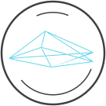
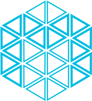
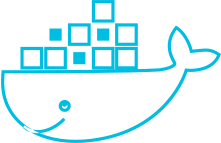
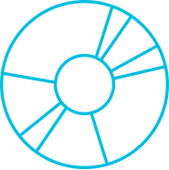
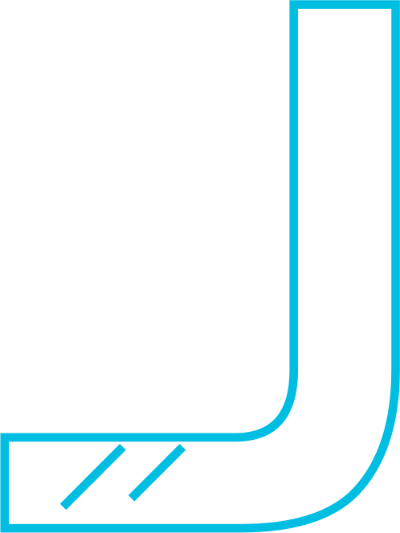
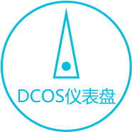
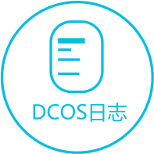
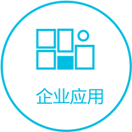

数人云 ･ 下一代 DCOS
将应用弹性做到极致
The Ultimate Application Flexibility
-
一键伸缩
秒级扩展1000个容器实例轻松应对高并发
-
资源池化
将Docker化容器应用与 Spark 等大数据应用混跑在同一集群提高资源利用率
-

混合云管理
支持公有云，私有云，混合云支持物理机，虚拟机
-
一键部署
一键部署 Docker 容器化应用，及 Spark、Hadoop 等分布式应用
-
简化运维
统一监控各种应用和集群资源使用情况，简化运维管理
-
保障高可用
自动迁移故障服务器上的应用实例，保障服务高可用
数人云能解决哪些问题?
- 高并发
- 容器云
- 持续集成
- 大数据平台
- 企业应用平台

一秒扩容 - 应对高并发
10倍流量体验依然顺畅
根据客户业务需求，
秒级动态伸缩业务应用实例个数，
保障业务应用的高性能。
了解详情 >
大规模 Docker 生产环境
微服务架构是云时代的趋势。
使用云操作系统可简化微服务应用的开发过程。
快速搭建容器云，统一管理数万个 Docker 实例
了解详情 >


持续集成环境 - 加快产品迭代
产品迭代速度已成为互联网公司成败的关键因素。
使用数人云操作系统可迅速搭建Jenkins持续集成环境，
从而保障产品实现快速迭代。
了解详情 >
大数据处理平台
用户需要更实时，更智能的应用。
要满足这些需求，企业需要一个大数据处理平台做支撑。
数人云可以快速搭建和管理流行的大数据处理框架。
了解详情 >
企业级应用平台 - 快速搭建生产环境
一键部署上万种Docker容器化应用
快速部署Hadoop，Spark，Cassandra,
Jenkins, Kafka and MemSQL 等分布式应用。
了解详情 >
多环境支持 & 无缝迁移
数人云DCOS，可安装在公有云、私有云、混合云之上。支持物理机、虚拟机。
可在多平台间无缝迁移。帮助用户保持统一的开发运维体验。
技术 & 组件
-

Mesos
分布式操作系统内核，也是数人云 DCOS 的核心组件。将整个集群抽象为一个资源池，可像用一台电脑一样管理整个集群资源。
-

Docker
Docker 容器是数人云 DCOS 的核心组件。使用数人云可轻松发布和管理 Docker 容器化应用（包括 Docker Hub 及其他第三方平台上的 Docker 镜像）。
-

Marathon
Mesos的框架之一，DCOS 重要组件。用于发布和管理长期运行的应用。如：web 应用，数据库，微服务应用等。
-
Chronos
一个具备容错特性的作业调度器。用于创建和管理定时任务以及复杂的 ETL 流程。
-

Jenkins
开源的持续集成工具。可帮助企业快速获得持续集成能力，加快产品迭代。
-

DCOS 仪表盘
通过统一界面，管理应用和集群。可随时监控每一个应用，集群，主机的运行健康状态。
-

DCOS 日志管理
统一收集应用和集群主机日志，能够快速查询和检索，帮助企业快速定位问题。
-

DCOS API
提供 API 接口，可与多种第三方应用，或企业自有管理系统对接整合。 在 DCOS 上定制化扩展企业特有功能。
-

企业应用平台
一键部署常用的 Docker 容器化应用，以及 Spark，Hadoop，Kafka，Cassandra 等分布式应用。